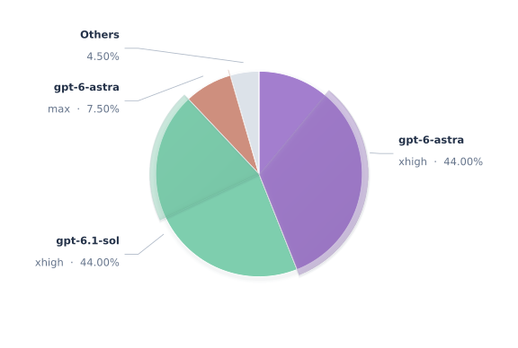
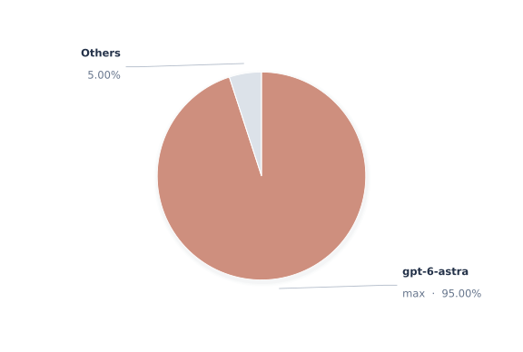
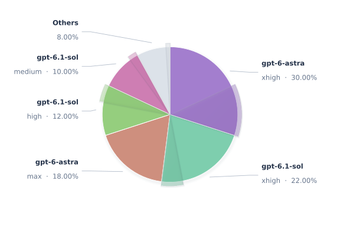
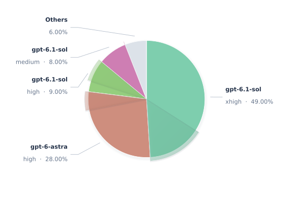
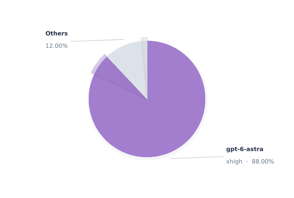
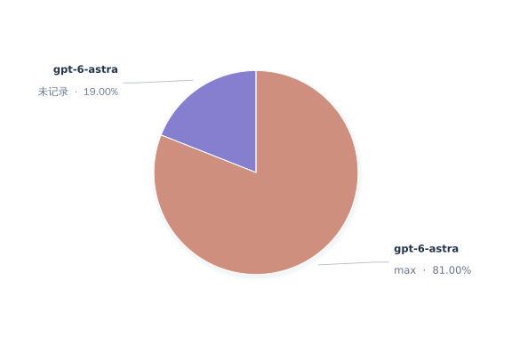

VISUAL REFERENCE · SYNTHETIC DATA
2026.10.10 08:00:00 — 2026.10.17 08:00:00 · Asia/Shanghai
已排除 UA ^prompt · 530 次成功请求
^prompt
另排除自动触发模型 codex-auto-review、gpt-5.6-luna · 520 次成功请求
codex-auto-review
gpt-5.6-luna
1,000 次请求





